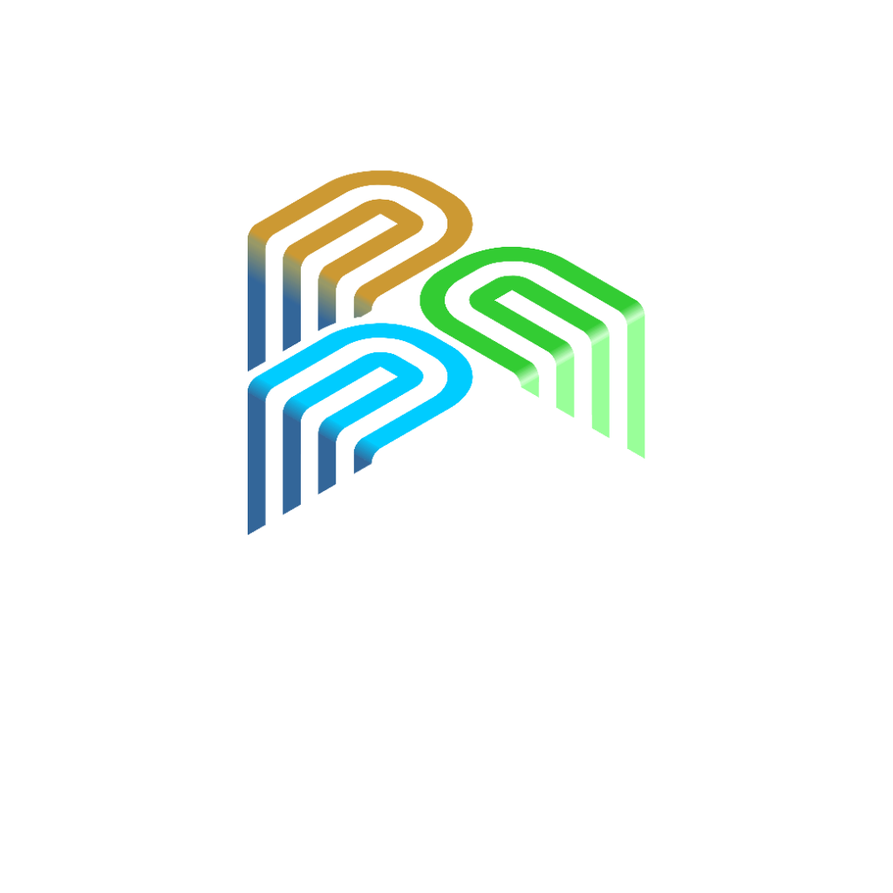

Lewati ke konten

Pengangguran Indonesia
Observatorium Data Ketenagakerjaan · BPS & RPJMN
Peta
Profil Wilayah
Sasaran RPJMN
Informasi
Lapisan peta
Tingkat wilayah
Frekuensi
Tabel & unduh CSV
+
−
Unduh CSV (seluruh periode)
Tutup